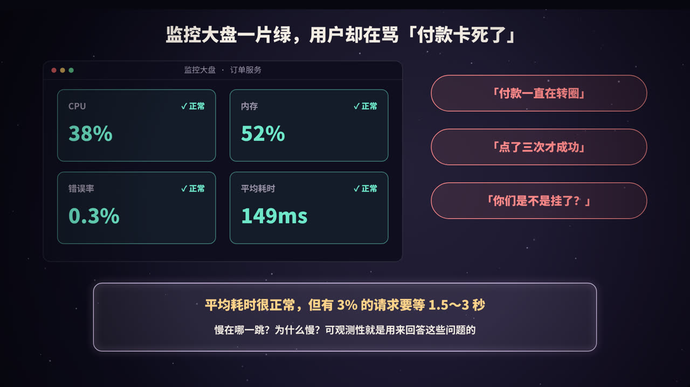
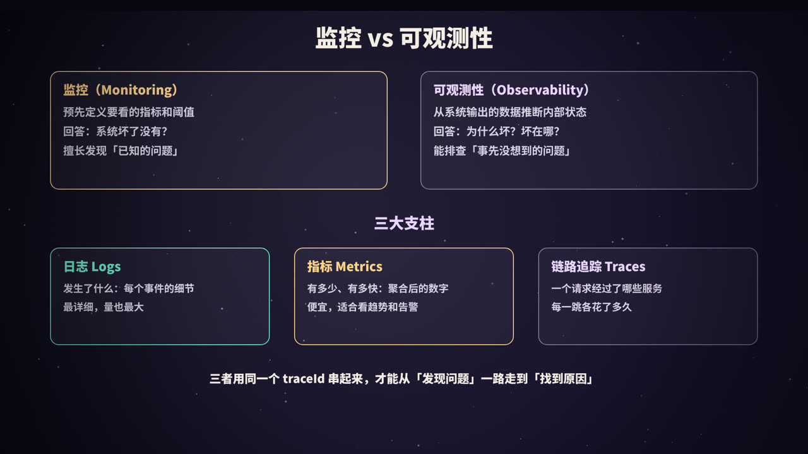
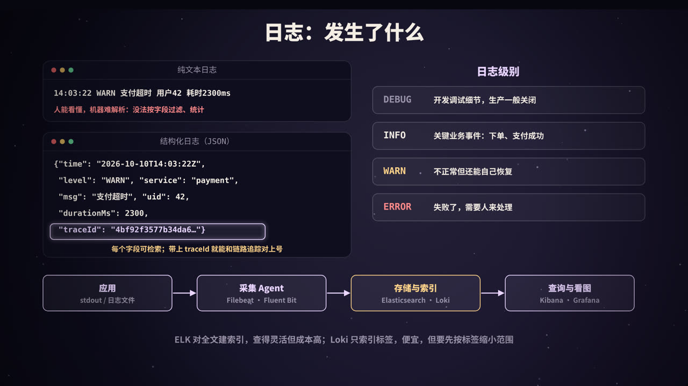
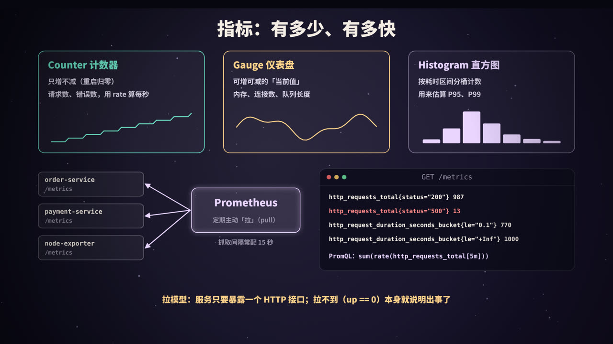
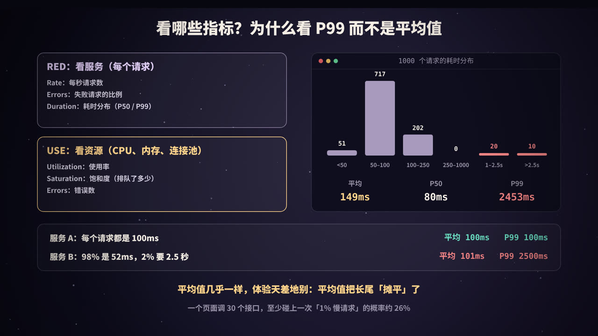
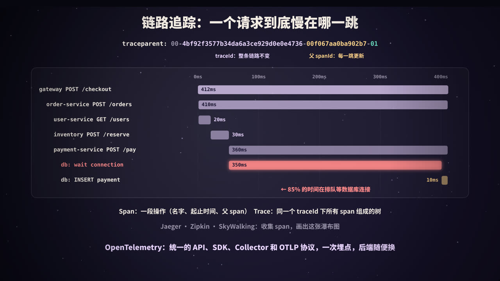
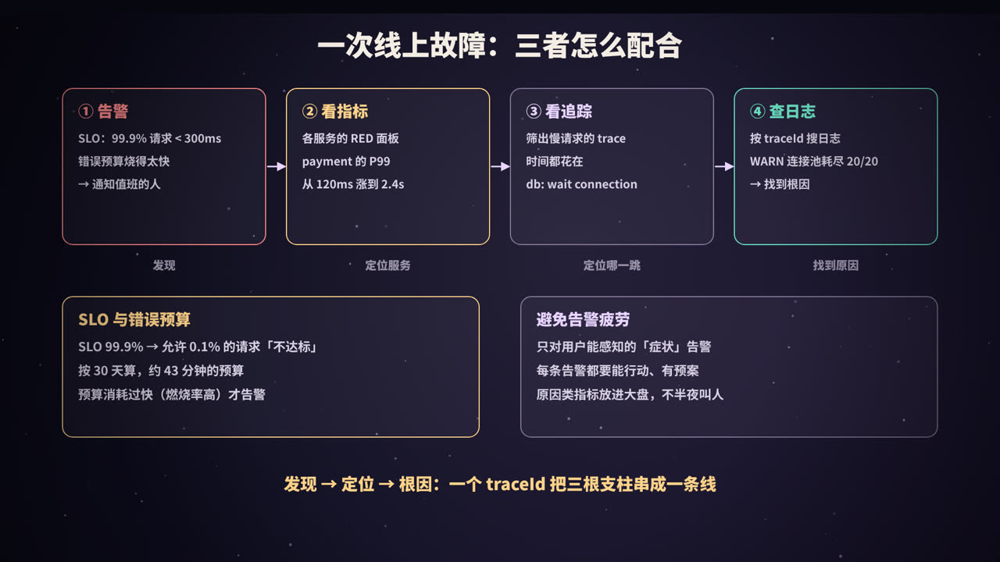

大盘一片绿，用户却在骂
这是很多后端工程师都经历过的一幕：用户群里有人说「付款一直在转圈」「点了三次才成功」，你打开监控大盘：CPU 38%、内存 52%、错误率 0.3%、平均耗时 149ms，全是绿的。
问题出在哪？可能是：
- 平均值骗了你：1000 个请求里 970 个只要几十毫秒，30 个要 1.5～3 秒，平均下来还是很「正常」的 149ms；
- 不知道慢在哪一跳：一次付款要经过网关、订单服务、用户服务、库存服务、支付服务、数据库……大盘只告诉你「订单服务有点慢」，没告诉你慢在它调用的哪一个下游；
- 不知道为什么慢：就算找到了是支付服务慢，日志有几十 GB，从哪里开始翻？
这些问题有一个共同点：你事先没有想到要问它们。你不可能为「支付服务在连接池满时排队」预先建一块仪表盘。能不能在出事之后，借助系统已经输出的数据，把这些问题一路追问下去并找到答案，这种能力就叫可观测性（Observability）。
这篇文章会讲清楚：
- 监控和可观测性有什么区别；
- 三大支柱：日志、指标、链路追踪分别是什么、怎么用；
- 为什么要看 P99 而不是平均值；
- traceId 怎么在服务之间传递，OpenTelemetry 又是什么；
- 怎样基于 SLO 和错误预算告警，以及三者怎么配合排查一次线上故障。
监控 vs 可观测性

两个词的区别
| 监控（Monitoring） | 可观测性（Observability） | |
|---|---|---|
| 关注的问题 | 系统坏了没有？ | 系统为什么坏？坏在哪里？ |
| 工作方式 | 预先定义好指标、仪表盘和告警阈值 | 采集足够丰富、能互相关联的数据，事后任意切分、下钻 |
| 擅长 | 「已知的未知」：知道可能出什么问题，提前盯着 | 「未知的未知」：从没见过的故障，也能一步步查下去 |
| 典型产物 | 仪表盘、告警 | 带上下文的日志、高维度的指标、完整的调用链 |
「可观测性」这个词来自控制理论：如果能通过一个系统的外部输出推断出它的内部状态，这个系统就是可观测的。放到软件里，就是：只看服务吐出来的日志、指标和追踪数据，不用登录机器加日志、不用重新发版，就能弄明白里面发生了什么。
两者不是替代关系。监控是可观测性的一部分：先由监控和告警发现「出事了」，再用可观测性的数据去定位「为什么」。
三大支柱
| 支柱 | 回答的问题 | 数据形态 | 特点 |
|---|---|---|---|
| 日志（Logs） | 发生了什么？ | 一条条离散的事件记录 | 最详细；量最大，存储和检索成本最高 |
| 指标（Metrics） | 有多少？有多快？ | 按时间聚合的数字（时间序列） | 便宜、可长期保存，适合看趋势和告警；但丢失了单个请求的细节 |
| 链路追踪（Traces） | 一个请求经过了哪里？每一跳花了多久？ | 一棵由 span 组成的树 | 天然跨服务；通常需要采样 |
三者各有盲区，单独使用都不够：指标告诉你 P99 涨了，但不知道是哪些请求；日志里有错误详情，但不知道它和哪次用户请求有关；追踪能看到慢在哪一跳，但看不到那一跳里面具体发生了什么。把它们串起来的，是同一个 traceId。
近年来也常把持续性能剖析（Continuous Profiling，持续采集 CPU、内存火焰图）称为「第四根支柱」，用来回答「这段代码为什么慢」。
日志：发生了什么

结构化日志
传统的日志是给人看的一行文本：
14:03:22 WARN 支付超时 用户42 耗时2300ms
人能看懂，但机器很难处理：想统计「过去一小时耗时超过 2 秒的支付有多少笔」，就得写正则去抠数字，格式稍微一变就失效。
结构化日志把每条日志写成一个 JSON 对象（或其他键值格式）：
{"time": "2026-10-10T14:03:22Z", "level": "WARN", "service": "payment",
"msg": "支付超时", "uid": 42, "durationMs": 2300,
"traceId": "4bf92f3577b34da6a3ce929d0e0e4736", "spanId": "00f067aa0ba902b7"}
好处是每个字段都能直接检索、过滤、聚合：service="payment" AND durationMs > 2000。
写好结构化日志的几个要点：
- 固定的公共字段：时间（带时区，最好是 UTC）、级别、服务名、实例、环境、版本；
- 带上 traceId 和 spanId：这是日志和追踪关联的关键。Java 里通常把它们放进 SLF4J 的 MDC，日志格式里引用；OpenTelemetry 的 Java Agent 可以自动完成注入；
- 消息文本固定，变量放字段：写
msg="支付超时", uid=42，而不是msg="用户 42 支付超时"，这样同一类事件可以被聚合； - 不要打印敏感信息：密码、完整的手机号和身份证号、Token 要脱敏或干脆不打；
- 输出到 stdout：在容器环境里（见本系列《Kubernetes 入门》），应用把日志写到标准输出，由节点上的采集器统一收集，比每个应用自己管日志文件简单得多。
日志级别
| 级别 | 用途 | 例子 |
|---|---|---|
| DEBUG | 开发调试的细节，生产环境一般关闭 | SQL 参数、中间变量 |
| INFO | 关键业务事件，事后用来还原发生了什么 | 订单创建、支付成功、服务启动 |
| WARN | 不正常，但系统还能自己处理 | 重试成功、降级、连接池接近用满 |
| ERROR | 失败了，需要人来关注 | 请求最终失败、数据不一致 |
常见的问题是级别用得太随意：把每一次可预期的业务失败（比如用户密码输错）都打成 ERROR，ERROR 日志多到没人看，真正的错误被淹没。ERROR 的标准应该是「值得有人去看一眼」。
日志的采集与存储
应用（stdout / 文件）→ 采集 Agent（Filebeat、Fluent Bit、Vector…）→ 缓冲（可选：Kafka）→ 存储与索引（Elasticsearch、Loki…）→ 查询界面（Kibana、Grafana）
两种主流的存储思路：
| Elasticsearch（ELK / EFK） | Grafana Loki | |
|---|---|---|
| 索引方式 | 对日志内容建全文倒排索引 | 只索引标签（服务名、环境、Pod 等），日志正文压缩存储 |
| 查询 | 任意字段、全文检索都很快 | 先按标签缩小范围，再在这些日志里扫描过滤 |
| 成本 | 索引体积大，存储和内存成本高 | 便宜得多，适合海量日志 |
日志是三大支柱里最贵的。控制成本的常用办法：生产环境默认 INFO 级别、对高频日志采样、按价值分级设置保留时间（比如热数据 7 天、归档 90 天），以及把「统计类」需求交给指标而不是日志。
指标：有多少、有多快

指标是什么
指标是按时间聚合的数字。一个指标由「名字 + 一组标签」唯一确定一条时间序列，比如：
http_requests_total{service="payment", method="POST", status="200"}
每隔一段时间记录一个值，就得到一条随时间变化的曲线。和日志相比，指标不管来了一亿个请求还是一百个请求，存储量都差不多，所以可以长期保存、快速查询，非常适合画趋势图和做告警。
三种基本类型
| 类型 | 特点 | 例子 | 怎么用 |
|---|---|---|---|
| Counter 计数器 | 只增不减（进程重启时归零） | 请求总数、错误总数、发送的字节数 | 看绝对值没意义，要用 rate() 算「每秒增长多少」 |
| Gauge 仪表盘 | 可增可减，表示「当前值」 | 内存使用量、在途请求数、队列长度、连接池活跃数 | 直接看当前值和变化趋势 |
| Histogram 直方图 | 把观测值按区间分桶计数，同时记录总和与总个数 | 请求耗时、响应体大小 | 用 histogram_quantile() 估算 P95、P99 |
Prometheus 还有一种 Summary 类型，在客户端直接算好分位数。缺点是分位数不能跨实例聚合（10 个实例各自的 P99 求平均，并不是整体的 P99），所以服务端聚合的场景更推荐 Histogram。
一个常见的错误：把耗时用 Gauge 记录「最近一次请求的耗时」。每次抓取只能看到某一个瞬间的值，中间的几千个请求全丢了。耗时一定要用 Histogram。
Prometheus 的拉模型
Prometheus 是最流行的开源指标系统，也是继 Kubernetes 之后第二个从 CNCF 毕业的项目。它的工作方式是拉（pull）：
- 每个服务暴露一个 HTTP 接口（通常是
/metrics），返回当前所有指标的文本； - Prometheus 按配置的间隔（常配 15 秒）去每个目标「抓取」（scrape）一次，存进自己的时序数据库；
- 用 PromQL 查询、画图（通常配合 Grafana），并按规则计算告警，交给 Alertmanager 去分组、去重、通知。
拉模型的好处：
- 服务端只需要暴露一个接口，不需要知道监控系统在哪里；
- Prometheus 掌握抓取节奏，不会被某个服务「推爆」；
- 抓不到本身就是信号：每个目标都有一个自动生成的
up指标，up == 0说明这个实例挂了或者网络不通。
对于运行时间很短、来不及被抓取的批处理任务，可以用 Pushgateway 中转；OpenTelemetry 的场景下也可以由 Collector 统一接收应用推来的指标，再暴露给 Prometheus。机器层面的指标（CPU、内存、磁盘、网络）由 node_exporter 之类的 exporter 提供，MySQL、Redis 等中间件也都有对应的 exporter。
标签基数：指标系统最常见的坑
每一种标签值的组合都是一条独立的时间序列。如果把 userId、orderId、完整 URL（带参数）这样取值无穷多的东西放进标签，时间序列的数量会爆炸（「高基数」问题），Prometheus 的内存很快被撑爆。
原则是：标签只放取值有限的维度（服务、接口模板、状态码、实例、区域）；要按用户、按订单去查，那是日志和追踪的活。
看哪些指标：RED、USE 与分位数

RED 方法：看服务
面向请求的服务（HTTP 接口、RPC 服务），每个服务都看这三个指标：
| 指标 | 含义 | PromQL 示意 |
|---|---|---|
| Rate | 每秒请求数 | sum(rate(http_requests_total[5m])) |
| Errors | 失败请求的比例 | 5xx 请求速率 ÷ 总请求速率 |
| Duration | 耗时分布（P50、P95、P99） | histogram_quantile(0.99, …) |
USE 方法：看资源
面向资源（CPU、内存、磁盘、网卡、连接池、线程池），每种资源看：
| 指标 | 含义 | 例子 |
|---|---|---|
| Utilization 使用率 | 资源有多忙 | CPU 使用率 70% |
| Saturation 饱和度 | 有多少工作在排队 | CPU 运行队列长度、连接池等待线程数、磁盘 IO 队列 |
| Errors 错误 | 资源相关的错误 | 网卡丢包、磁盘错误、获取连接超时 |
饱和度经常被忽略，却往往是最早的预警信号：连接池使用率 100% 本身未必是问题，有线程在排队等连接才是。本文开头的故障就是这样：支付服务的数据库连接池 20/20 用满，后来的请求都在排队。
Google SRE 书里的「四个黄金信号」（延迟、流量、错误、饱和度）可以看作这两种方法的合体。
为什么看 P99，而不是平均值
分位数的意思是：把所有请求按耗时从小到大排好，P99 就是排在 99% 位置的那个值，即「99% 的请求都不超过这个耗时」。P50 就是中位数。
平均值的问题是：它把少数极慢的请求「摊平」了。下面「动手」一节的代码模拟了 1000 个请求，其中 3% 撞上了慢查询：
| 统计量 | 值 |
|---|---|
| 平均值 | 148.7 ms |
| P50（中位数） | 79.8 ms |
| P95 | 148.2 ms |
| P99 | 2452.8 ms |
平均值 149ms 看起来很健康，但它既不能代表大多数请求（中位数只有 80ms），也完全看不出有 30 个用户等了 1.5 秒以上。更极端的对比：
- 服务 A：每个请求都是 100ms，平均 100ms，P99 100ms；
- 服务 B：98% 的请求 52ms，2% 要 2.5 秒，平均 101ms，P99 2500ms。
两个服务平均值几乎一样，用户体验天差地别。
为什么 1% 的慢请求值得这么在意？
- 一个页面会调用很多接口：打开一个页面要调 30 个接口时，至少碰上一次「1% 慢请求」的概率是 1 − 0.99³⁰ ≈ 26%；
- 慢请求常常来自最重要的用户：数据最多、订单最多的用户，查询往往最慢；
- 长尾是故障的前兆：连接池、锁、GC 等资源争抢，最先体现在尾部延迟上，平均值要等到问题很严重时才会动。
所以耗时类指标，看 P99（甚至 P99.9），而不是平均值；同时看 P50，知道「大多数人」的体验。另外要注意：不同实例的 P99 不能简单求平均，要用 Histogram 的桶数据先合并再计算分位数。
链路追踪：一个请求到底慢在哪一跳

trace 与 span
一个用户请求进入系统后，会经过多个服务、多次数据库和缓存访问。链路追踪把这次请求的完整路径记录下来：
- Span：一段操作，比如「order-service 处理 POST /orders」或者「执行一条 SQL」。它记录名字、开始时间、耗时、所属服务、状态，以及若干属性（如 HTTP 状态码、SQL 语句模板）；
- Trace：同一个请求产生的所有 span，通过 traceId 归到一起，通过「父 span」关系连成一棵树；
- 瀑布图：按时间把 span 画成横条，嵌套关系一目了然，哪一段最长、哪些调用是串行的，一眼就能看出来。
这个思路最早由 Google 2010 年的 Dapper 论文系统地提出，之后出现了 Zipkin、Jaeger、SkyWalking 等开源实现。
traceId 怎么跨服务传递
关键在于上下文传播（Context Propagation）：服务 A 调用服务 B 时，把「当前的 traceId 和自己的 spanId」放进请求头；服务 B 收到后，用这个 traceId 继续记录，并把 A 的 spanId 作为自己的父 span。
W3C 的 Trace Context 规范统一了这个请求头的格式：
traceparent: 00-4bf92f3577b34da6a3ce929d0e0e4736-00f067aa0ba902b7-01
│ │ │ └ flags：01 表示被采样
│ │ └ parent-id：调用方 span 的 ID（16 位十六进制）
│ └ trace-id：整条链路共用（32 位十六进制）
└ version
规范还定义了一个 tracestate 头，用来携带各厂商自己的扩展信息。有了统一格式，不同语言、不同框架、不同厂商的组件就能接力传递同一个 traceId。
服务内部的传递也同样重要：一个请求在服务里可能跨越多个函数、多个线程、多个协程。Java 一般用 ThreadLocal 保存当前上下文，Python 用 contextvars，Go 用显式传递的 context.Context。线程池、异步回调、消息队列是最容易断链的地方：
- 提交到线程池的任务，默认拿不到提交者线程的上下文，需要包装（OpenTelemetry 的 Java Agent 对常见线程池做了自动处理）；
- 消息队列（见本系列《消息队列》）要把 traceparent 放进消息头，消费者处理时再恢复。
采样
每个请求都完整记录 trace，存储成本很高。常用两种采样策略：
| 策略 | 做法 | 优缺点 |
|---|---|---|
| 头部采样 | 请求入口就决定这条 trace 要不要记录（比如 10%），通过 flags 告诉下游 | 简单、开销小；但慢请求和错误请求也可能被丢掉 |
| 尾部采样 | 先把所有 span 收集到 Collector，整条 trace 结束后再决定留不留 | 可以「错误全留、慢请求全留、正常请求留 10%」；需要缓存数据，Collector 成本更高 |
OpenTelemetry：统一标准
过去每家追踪系统都有自己的 SDK 和数据格式，换一个后端就要改一遍埋点代码。OpenTelemetry（简称 OTel）由 OpenTracing 和 OpenCensus 两个项目在 2019 年合并而来，是 CNCF 的项目，目标是成为可观测性数据的统一标准：
| 组成部分 | 作用 |
|---|---|
| API / SDK | 各语言统一的埋点接口，覆盖 traces、metrics、logs |
| 自动埋点 | 如 Java Agent：不改代码，自动为常见框架（HTTP、gRPC、JDBC、Redis 客户端、消息队列）生成 span 并传播上下文 |
| OTLP 协议 | 统一的数据传输协议（gRPC 默认端口 4317，HTTP 默认 4318） |
| Collector | 独立部署的「数据中转站」：接收、处理（批量、过滤、采样、脱敏）、再导出到任意后端 |
OTel 只负责采集和传输，不负责存储和展示。后端可以是 Jaeger、Zipkin、SkyWalking、Prometheus、Loki、Elasticsearch，或者各种商业平台。好处是：一次埋点，后端随便换；而且三种数据共享同一套资源属性（服务名、版本、实例）和同一个 trace 上下文，天然可以关联。
动手：用 Python 标准库串起三根支柱
下面的代码只用 Python 标准库，所有输出都是真实运行的结果。
实验一：traceId 传播、span 树与结构化日志
模拟一次下单请求：gateway → order-service → (user-service, inventory-service, payment-service → 数据库)。几个关键点：
contextvars保存「当前 span」，同一服务内的子 span 自动找到父 span；- 服务之间的「HTTP 调用」只传一个
headers字典，traceId 通过 W3Ctraceparent请求头传过去； - 日志的 Formatter 从 contextvars 里取出当前的 traceId 和 spanId，业务代码打日志时完全不用操心；
- 支付服务里故意让「等待数据库连接」花掉 350ms。
"""用标准库模拟分布式追踪：traceId 在服务间通过 traceparent 请求头传播，
contextvars 保存「当前 span」，日志自动带上 traceId / spanId。"""
import contextvars, json, logging, os, sys, time
from contextlib import contextmanager
current_span = contextvars.ContextVar("current_span", default=None)
finished = [] # 相当于发给 Jaeger / Zipkin 的 span 数据
class Span:
def __init__(self, name, trace_id, parent_id):
self.name, self.trace_id, self.parent_id = name, trace_id, parent_id
self.span_id = os.urandom(8).hex() # 16 个十六进制字符
self.start = time.perf_counter()
self.end = None
@contextmanager
def span(name, parent_header=None):
"""开始一个 span。parent_header 是从上游请求头里取出的 traceparent。"""
parent = current_span.get()
if parent_header: # 跨服务：从请求头恢复上下文
_, trace_id, parent_id, _ = parent_header.split("-")
elif parent: # 同一服务内：继承当前 span
trace_id, parent_id = parent.trace_id, parent.span_id
else: # 入口：生成新的 traceId
trace_id, parent_id = os.urandom(16).hex(), None
s = Span(name, trace_id, parent_id)
token = current_span.set(s)
try:
yield s
finally:
s.end = time.perf_counter()
current_span.reset(token)
finished.append(s)
def inject_headers():
"""发起下游调用前，把当前上下文写进 W3C traceparent 请求头"""
s = current_span.get()
return {"traceparent": f"00-{s.trace_id}-{s.span_id}-01"}
# ---------- 结构化 JSON 日志：自动带上 traceId ----------
class JsonFormatter(logging.Formatter):
def format(self, record):
s = current_span.get()
return json.dumps({
"level": record.levelname, "service": record.name, "msg": record.getMessage(),
"traceId": s.trace_id if s else None, "spanId": s.span_id if s else None,
**getattr(record, "fields", {}),
}, ensure_ascii=False)
handler = logging.StreamHandler(sys.stdout); handler.setFormatter(JsonFormatter())
def logger(name):
lg = logging.getLogger(name); lg.addHandler(handler); lg.setLevel(logging.INFO); return lg
# ---------- 三级服务调用：gateway → order → (user, inventory, payment → db) ----------
def call(service_fn, **kw): # 模拟一次 HTTP 调用：只传请求头
return service_fn(inject_headers(), **kw)
def user_service(headers, uid):
with span("user-service GET /users/{id}", headers["traceparent"]):
time.sleep(0.02)
return {"uid": uid, "level": "gold"}
def inventory_service(headers, sku):
with span("inventory-service POST /reserve", headers["traceparent"]):
time.sleep(0.03)
return True
def payment_service(headers, amount):
log = logger("payment-service")
with span("payment-service POST /pay", headers["traceparent"]):
with span("db: wait connection"): # 连接池满了，排队等连接
time.sleep(0.35)
log.warning("数据库连接池耗尽，等待连接", extra={"fields": {"poolActive": 20, "poolMax": 20, "waitMs": 350}})
with span("db: INSERT payment"):
time.sleep(0.01)
return "PAID"
def order_service(headers, uid, sku):
log = logger("order-service")
with span("order-service POST /orders", headers["traceparent"]):
log.info("创建订单", extra={"fields": {"uid": uid, "sku": sku}})
call(user_service, uid=uid)
call(inventory_service, sku=sku)
status = call(payment_service, amount=99)
log.info("订单完成", extra={"fields": {"status": status}})
def gateway(uid, sku):
with span("gateway POST /api/checkout") as root:
call(order_service, uid=uid, sku=sku)
return root.trace_id
trace_id = gateway(uid=42, sku="A-1001")
# ---------- 打印 span 树（瀑布图）----------
spans = {s.span_id: s for s in finished}
root = next(s for s in finished if s.parent_id is None)
total = root.end - root.start
def show(s, depth=0):
off, dur = (s.start - root.start) * 1000, (s.end - s.start) * 1000
bar = " " * round(off / total / 1000 * 40) + "█" * max(1, round(dur / total / 1000 * 40))
print(f"{' ' * depth + s.name:<36} {off:6.0f}ms +{dur:5.0f}ms |{bar:<40}|")
for c in sorted((c for c in finished if c.parent_id == s.span_id), key=lambda c: c.start):
show(c, depth + 1)
print(f"\ntraceId = {trace_id}，共 {len(finished)} 个 span，全部共享这一个 traceId：{len({s.trace_id for s in finished}) == 1}")
show(root)
leaf = max((s for s in finished if not any(c.parent_id == s.span_id for c in finished)), key=lambda s: s.end - s.start)
print(f"最慢的叶子 span：{leaf.name}，{(leaf.end - leaf.start)*1000:.0f}ms，占整个请求的 {(leaf.end - leaf.start)/total:.0%}")
运行结果（traceId 和 spanId 是随机生成的，耗时每次会有毫秒级的差异）：
{"level": "INFO", "service": "order-service", "msg": "创建订单", "traceId": "c89580b537436b836445f7bee518cf80", "spanId": "d4feba643f106eed", "uid": 42, "sku": "A-1001"}
{"level": "WARNING", "service": "payment-service", "msg": "数据库连接池耗尽，等待连接", "traceId": "c89580b537436b836445f7bee518cf80", "spanId": "7ce5d4723d20291b", "poolActive": 20, "poolMax": 20, "waitMs": 350}
{"level": "INFO", "service": "order-service", "msg": "订单完成", "traceId": "c89580b537436b836445f7bee518cf80", "spanId": "d4feba643f106eed", "status": "PAID"}
traceId = c89580b537436b836445f7bee518cf80，共 7 个 span，全部共享这一个 traceId：True
gateway POST /api/checkout 0ms + 411ms |████████████████████████████████████████|
order-service POST /orders 0ms + 411ms |████████████████████████████████████████|
user-service GET /users/{id} 0ms + 20ms |██ |
inventory-service POST /reserve 20ms + 30ms | ███ |
payment-service POST /pay 51ms + 361ms | ███████████████████████████████████|
db: wait connection 51ms + 350ms | ██████████████████████████████████ |
db: INSERT payment 401ms + 10ms | █|
最慢的叶子 span：db: wait connection，350ms，占整个请求的 85%
可以看到：
- 3 条日志来自两个不同的服务，但 traceId 完全相同。在日志系统里搜这个 traceId，就能拿到这次请求在所有服务里的全部日志；
- 警告（WARNING）日志的 spanId 是 payment-service 那个 span 的 ID，它告诉你这条日志具体发生在调用链的哪个位置；
- span 树一眼看出：整个请求约 410ms，user-service 和 inventory-service 都很快，85% 的时间花在支付服务等待数据库连接上。如果只看订单服务的耗时指标，你只知道「订单服务慢」，不会知道原因在两跳之外。
实验二：三种指标和 /metrics 的样子
"""三种指标类型 + Prometheus 文本格式（/metrics 接口返回的内容），只用标准库。"""
import random
from collections import defaultdict
random.seed(3)
class Counter: # 只增不减：请求总数、错误总数
def __init__(self, name): self.name, self.v = name, defaultdict(float)
def inc(self, **labels): self.v[tuple(sorted(labels.items()))] += 1
class Gauge: # 可增可减：当前值，如在途请求数、队列长度
def __init__(self, name): self.name, self.value = name, 0
def set(self, x): self.value = x
class Histogram: # 分桶计数：耗时分布，用来估算分位数
def __init__(self, name, buckets):
self.name, self.buckets = name, buckets
self.counts, self.sum, self.count = [0] * len(buckets), 0.0, 0
def observe(self, x):
self.sum += x; self.count += 1
for i, le in enumerate(self.buckets):
if x <= le: self.counts[i] += 1 # 累积桶：le=0.25 也包含 ≤0.1 的样本
def lbl(t): return "{" + ",".join(f'{k}="{v}"' for k, v in t) + "}"
requests = Counter("http_requests_total")
inflight = Gauge("http_requests_in_flight")
latency = Histogram("http_request_duration_seconds", [0.05, 0.1, 0.25, 0.5, 1, 2.5])
for _ in range(1000): # 模拟 1000 个请求
slow = random.random() < 0.03
sec = random.uniform(1.5, 3) if slow else random.uniform(0.03, 0.12)
status = "500" if random.random() < 0.01 else "200"
requests.inc(method="GET", status=status)
latency.observe(sec)
inflight.set(7)
# Prometheus 每隔 15 秒左右来「拉」一次的就是下面这段文本
print(f"# TYPE {requests.name} counter")
for k, v in sorted(requests.v.items()): print(f"{requests.name}{lbl(k)} {v:g}")
print(f"# TYPE {inflight.name} gauge\n{inflight.name} {inflight.value}")
print(f"# TYPE {latency.name} histogram")
for le, c in zip(latency.buckets, latency.counts): print(f'{latency.name}_bucket{{le="{le}"}} {c}')
print(f'{latency.name}_bucket{{le="+Inf"}} {latency.count}')
print(f"{latency.name}_sum {latency.sum:.3f}\n{latency.name}_count {latency.count}")
输出（这就是 Prometheus 每次抓取时拿到的文本格式）：
# TYPE http_requests_total counter
http_requests_total{method="GET",status="200"} 987
http_requests_total{method="GET",status="500"} 13
# TYPE http_requests_in_flight gauge
http_requests_in_flight 7
# TYPE http_request_duration_seconds histogram
http_request_duration_seconds_bucket{le="0.05"} 207
http_request_duration_seconds_bucket{le="0.1"} 770
http_request_duration_seconds_bucket{le="0.25"} 973
http_request_duration_seconds_bucket{le="0.5"} 973
http_request_duration_seconds_bucket{le="1"} 973
http_request_duration_seconds_bucket{le="2.5"} 994
http_request_duration_seconds_bucket{le="+Inf"} 1000
http_request_duration_seconds_sum 129.933
http_request_duration_seconds_count 1000
注意 Histogram 的桶是累积的：le="0.25" 的 973 包含了 le="0.1" 的 770。Prometheus 不存每个请求的耗时，只存这几个桶的计数，所以无论请求量多大，一个接口的耗时分布只占固定的几条时间序列。
实验三：平均值、分位数与直方图估算
import random, math
random.seed(7)
# 模拟 1000 个请求的耗时（毫秒）：大多数很快，但有 3% 撞上了慢查询 / 锁等待
fast = [random.lognormvariate(math.log(80), 0.3) for _ in range(970)]
slow = [random.uniform(1500, 3000) for _ in range(30)]
lat = sorted(fast + slow)
def pct(data, p):
"""最近秩法：至少 p% 的请求不超过这个值"""
k = max(1, math.ceil(p / 100 * len(data)))
return data[k - 1]
mean = sum(lat) / len(lat)
print(f"请求数 {len(lat)}")
print(f"平均值 {mean:7.1f} ms")
for p in (50, 90, 95, 99, 99.9):
print(f"P{p:<4} {pct(lat, p):7.1f} ms")
print(f"最大值 {lat[-1]:7.1f} ms")
print(f"超过 1 秒的请求：{sum(x > 1000 for x in lat)} 个（{sum(x > 1000 for x in lat) / len(lat):.1%}）")
# 两个服务：平均值几乎一样，体验天差地别
a = [100.0] * 1000 # 服务 A：每个请求都是 100ms
b = [52.0] * 980 + [2500.0] * 20 # 服务 B：98% 很快，2% 要 2.5 秒
for name, d in (("服务 A", a), ("服务 B", b)):
d = sorted(d)
print(f"{name}: 平均 {sum(d)/len(d):6.1f} ms P50 {pct(d,50):6.1f} P99 {pct(d,99):7.1f} ms")
# Prometheus 直方图：只存「每个桶里有多少个」，分位数靠桶内线性插值估算
buckets = [50, 100, 250, 500, 1000, 2500, 5000, float("inf")]
cum = [sum(x <= le for x in lat) for le in buckets] # 累积计数，对应 le="..." 标签
print("直方图累积计数:", {("+Inf" if le == float("inf") else le): c for le, c in zip(buckets, cum)})
def histogram_quantile(q, buckets, cum):
rank = q * cum[-1]
for i, c in enumerate(cum):
if c >= rank:
lo = buckets[i - 1] if i else 0
prev = cum[i - 1] if i else 0
return lo + (buckets[i] - lo) * (rank - prev) / (c - prev)
for q in (0.5, 0.95, 0.99):
print(f"histogram_quantile({q}) ≈ {histogram_quantile(q, buckets, cum):7.1f} ms （精确值 {pct(lat, q*100):7.1f} ms）")
输出：
请求数 1000
平均值 148.7 ms
P50 79.8 ms
P90 124.7 ms
P95 148.2 ms
P99 2452.8 ms
P99.9 2982.6 ms
最大值 2982.6 ms
超过 1 秒的请求：30 个（3.0%）
服务 A: 平均 100.0 ms P50 100.0 P99 100.0 ms
服务 B: 平均 101.0 ms P50 52.0 P99 2500.0 ms
直方图累积计数: {50: 51, 100: 768, 250: 970, 500: 970, 1000: 970, 2500: 990, 5000: 1000, '+Inf': 1000}
histogram_quantile(0.5) ≈ 81.3 ms （精确值 79.8 ms）
histogram_quantile(0.95) ≈ 235.1 ms （精确值 148.2 ms）
histogram_quantile(0.99) ≈ 2500.0 ms （精确值 2452.8 ms）
三个结论：
- 平均值（148.7ms）被 3% 的慢请求拉高了近一倍，却仍然远远低于这些慢请求本身的耗时，P99 才暴露出 2.4 秒的长尾；
- 服务 A 和服务 B 平均值几乎相同，P99 差了 25 倍；
- 直方图估算的分位数精度取决于桶的划分：P95 的真实值是 148ms，但它落在 100～250ms 这个宽桶里，线性插值估出了 235ms。所以桶的边界要围绕你关心的阈值来设计（比如 SLO 是 300ms，就要有一个 0.3 秒的桶）。Prometheus 较新的版本提供了原生直方图（native histograms），可以自动使用更细的指数分桶。
实验四：SLO 与错误预算
# SLO 与错误预算：允许多少「坏」、按什么速度烧完
WINDOW_DAYS = 30
minutes = WINDOW_DAYS * 24 * 60
for slo in (0.99, 0.999, 0.9999):
budget = 1 - slo
print(f"SLO {slo:.2%}：错误预算 {budget:.2%}，30 天内全站故障最多 {minutes * budget:7.1f} 分钟")
print()
slo = 0.999
for burn in (1, 2, 6, 14.4):
hours_to_empty = WINDOW_DAYS * 24 / burn
print(f"燃烧率 {burn:>4}（错误率 {burn * (1 - slo):.2%}）：{hours_to_empty:6.1f} 小时烧完预算；"
f"1 小时消耗预算的 {1 / (WINDOW_DAYS * 24) * burn:.1%}")
输出：
SLO 99.00%：错误预算 1.00%，30 天内全站故障最多 432.0 分钟
SLO 99.90%：错误预算 0.10%，30 天内全站故障最多 43.2 分钟
SLO 99.99%：错误预算 0.01%，30 天内全站故障最多 4.3 分钟
燃烧率 1（错误率 0.10%）： 720.0 小时烧完预算；1 小时消耗预算的 0.1%
燃烧率 2（错误率 0.20%）： 360.0 小时烧完预算；1 小时消耗预算的 0.3%
燃烧率 6（错误率 0.60%）： 120.0 小时烧完预算；1 小时消耗预算的 0.8%
燃烧率 14.4（错误率 1.44%）： 50.0 小时烧完预算；1 小时消耗预算的 2.0%
告警与联动排查

基于 SLO 的告警
几个概念：
- SLI（服务水平指标）：衡量服务质量的指标，比如「耗时小于 300ms 且成功的请求所占比例」；
- SLO（服务水平目标）：给 SLI 定的目标，比如「30 天内 99.9% 的请求满足要求」；
- 错误预算：1 − SLO。99.9% 的 SLO 意味着有 0.1% 的「额度」可以失败，换算成全站完全不可用的时间，30 天大约 43 分钟（实验四的输出）；
- 燃烧率（burn rate）：错误预算被消耗的速度。燃烧率为 1，表示刚好在 30 天末用完；燃烧率为 14.4，表示 1 小时就会烧掉 2% 的预算，约 50 小时就会全部烧光。
传统的告警是「CPU > 80% 就报警」「错误率 > 1% 就报警」。问题是：CPU 高未必影响用户，错误率在流量低谷时偶尔一跳也会触发，于是告警越来越多，大家开始习惯性忽略，这就是告警疲劳。真正的故障反而被淹没在噪音里。
基于 SLO 的告警换了一个角度：只在错误预算被快速消耗时告警。常见做法是多窗口、多燃烧率：
| 燃烧率 | 长窗口 / 短窗口 | 消耗预算 | 处理方式 |
|---|---|---|---|
| 14.4 | 1 小时 / 5 分钟 | 2% | 立刻叫醒值班的人 |
| 6 | 6 小时 / 30 分钟 | 5% | 立刻叫醒值班的人 |
| 1 | 3 天 / 6 小时 | 10% | 提工单，工作时间处理 |
长窗口保证不会因为一次小抖动就报警，短窗口保证问题恢复后告警能尽快消失。
几条告警原则：
- 对症状告警，而不是对原因告警：用户感知到的是「慢」「失败」，而不是「CPU 高」。CPU、连接池、GC 这些原因类指标放进大盘，用于排查，不用来半夜叫人；
- 每条告警都要可行动：收到告警的人应该知道要做什么，最好附上排查手册（runbook）链接；
- 定期清理：一条告警如果经常触发、却从来不需要处理，就该删掉或者调整阈值。
错误预算还有一个管理上的用途：预算充足时可以放心地快速发布；预算快用完时，就该放慢发布节奏，优先投入稳定性。
三者联动：排查一次线上故障
回到文章开头的场景，完整的排查过程是这样的：
| 步骤 | 用什么 | 看到了什么 |
|---|---|---|
| ① 发现 | 告警（SLO 燃烧率） | 下单接口的耗时 SLO 预算消耗过快，通知值班工程师 |
| ② 定位服务 | 指标（各服务的 RED 面板） | 网关和订单服务的 P99 都涨了，但订单服务调用的下游里，只有 payment 的 P99 从 120ms 涨到了 2.4s；错误率基本没变 |
| ③ 定位哪一跳 | 追踪（筛选慢 trace） | 在追踪系统里筛出 payment 耗时超过 1 秒的 trace，瀑布图显示时间都花在 db: wait connection 这个 span 上 |
| ④ 找到原因 | 日志（按 traceId 检索） | 用这条 trace 的 traceId 搜日志，看到 WARN「数据库连接池耗尽，active 20/20」；再看连接池的饱和度指标，发现一个新上线的对账任务占住了大量连接 |
把三者串起来的关键是关联：
- 日志里带 traceId，追踪的 span 可以一键跳转到对应日志；
- 指标图上可以附带 exemplar（样例）：在某个时间点的耗时数据旁边，附上一个当时真实请求的 traceId，从「P99 突然升高」的图上直接点进一条慢 trace；
- 所有数据使用相同的服务名、实例、版本等资源属性，可以在不同视图之间切换而不丢失上下文。
指标告诉你「有问题」，追踪告诉你「在哪」，日志告诉你「为什么」。
参考写法：PromQL、告警规则与 OpenTelemetry
下面的配置需要真实的 Prometheus、OpenTelemetry Collector 等组件才能运行，属于参考写法，本机没有部署；其中的 YAML 已经用 PyYAML 检查过语法，Collector 配置还用脚本检查了 pipelines 里引用的组件都已定义。
常用 PromQL
# 每个服务的每秒请求数（R）
sum by (service) (rate(http_requests_total[5m]))
# 错误率（E）：5xx 占比
sum by (service) (rate(http_requests_total{status=~"5.."}[5m]))
/ sum by (service) (rate(http_requests_total[5m]))
# P99 耗时（D）：先按桶把所有实例合并，再算分位数
histogram_quantile(0.99, sum by (service, le) (rate(http_request_duration_seconds_bucket[5m])))
# 哪些实例抓取失败了
up == 0
rate() 会自动处理 Counter 因进程重启而归零的情况，所以对 Counter 永远用 rate() 或 increase()，不要直接对原始值做减法。
基于燃烧率的告警规则（Prometheus）
groups:
- name: checkout-slo
rules:
# 快速燃烧：1 小时和 5 分钟窗口的错误率都超过预算的 14.4 倍 → 立刻叫人
- alert: CheckoutErrorBudgetFastBurn
expr: |
(
sum(rate(http_requests_total{service="checkout",status=~"5.."}[1h]))
/ sum(rate(http_requests_total{service="checkout"}[1h])) > (14.4 * 0.001)
)
and
(
sum(rate(http_requests_total{service="checkout",status=~"5.."}[5m]))
/ sum(rate(http_requests_total{service="checkout"}[5m])) > (14.4 * 0.001)
)
labels:
severity: page
annotations:
summary: "下单接口错误预算正在快速消耗"
runbook: "https://wiki.example.com/runbooks/checkout-errors"
# 慢速燃烧：3 天和 6 小时窗口都超过预算的 1 倍 → 提工单，工作时间处理
- alert: CheckoutErrorBudgetSlowBurn
expr: |
(
sum(rate(http_requests_total{service="checkout",status=~"5.."}[3d]))
/ sum(rate(http_requests_total{service="checkout"}[3d])) > (1 * 0.001)
)
and
(
sum(rate(http_requests_total{service="checkout",status=~"5.."}[6h]))
/ sum(rate(http_requests_total{service="checkout"}[6h])) > (1 * 0.001)
)
labels:
severity: ticket
OpenTelemetry Collector 配置
receivers:
otlp: # 接收应用用 OTLP 协议发来的数据
protocols:
grpc:
endpoint: 0.0.0.0:4317
http:
endpoint: 0.0.0.0:4318
processors:
memory_limiter: # 防止 Collector 自己被打爆
check_interval: 1s
limit_percentage: 80
spike_limit_percentage: 20
batch: {} # 攒一批再发，减少网络开销
tail_sampling: # 尾部采样：整条 trace 结束后再决定留不留
decision_wait: 10s
policies:
- name: keep-errors
type: status_code
status_code: {status_codes: [ERROR]}
- name: keep-slow
type: latency
latency: {threshold_ms: 1000}
- name: sample-10-percent
type: probabilistic
probabilistic: {sampling_percentage: 10}
exporters:
otlp/jaeger: # 追踪 → Jaeger（原生支持 OTLP）
endpoint: jaeger-collector:4317
tls:
insecure: true
prometheus: # 指标 → 暴露给 Prometheus 来拉
endpoint: 0.0.0.0:8889
otlphttp/loki: # 日志 → Loki 的 OTLP 接口
endpoint: http://loki:3100/otlp
service:
pipelines:
traces:
receivers: [otlp]
processors: [memory_limiter, tail_sampling, batch]
exporters: [otlp/jaeger]
metrics:
receivers: [otlp]
processors: [memory_limiter, batch]
exporters: [prometheus]
logs:
receivers: [otlp]
processors: [memory_limiter, batch]
exporters: [otlphttp/loki]
应用侧接入（以 Java 为例，参考写法）：不用改代码，启动时挂上 OpenTelemetry Java Agent，通过环境变量配置服务名和 Collector 地址即可：
export OTEL_SERVICE_NAME=payment-service
export OTEL_EXPORTER_OTLP_ENDPOINT=http://otel-collector:4318
export OTEL_RESOURCE_ATTRIBUTES=deployment.environment=prod,service.version=1.4.2
java -javaagent:opentelemetry-javaagent.jar -jar payment-service.jar
Agent 会自动为 Spring MVC、JDBC、HTTP 客户端、常见消息队列客户端等生成 span、传播 traceparent，并把 traceId 注入日志框架的 MDC。需要在业务代码里加自定义 span 或属性时，再使用 OTel 的 API。
工程实践与常见坑
- 先统一，再丰富：服务名、环境、版本这些资源属性在三类数据里保持一致；日志格式全公司统一；traceId 字段名统一。没有统一的命名，关联就无从谈起；
- 网关和入口一定要接入追踪：链路从第一跳就断了，后面全白费。同样要关注线程池、异步任务、消息队列这些容易断链的地方；
- 控制指标的标签基数：不要把 userId、订单号、带参数的 URL 放进标签。接口路径要用路由模板（
/orders/{id}），而不是真实路径； - 日志不是越多越好：循环里打日志、每个请求打十几条 INFO，会把存储和网络打爆，也会拖慢应用。高频路径考虑采样或降级为 DEBUG；
- 敏感信息脱敏：日志、span 属性、SQL 参数都可能带出用户隐私。可以在 Collector 里统一做过滤和脱敏；
- 注意时钟：瀑布图依赖各机器的时间戳，时钟偏差会让子 span 看起来比父 span 先开始。服务器要开启时间同步；
- 可观测性系统本身也要被监控：Collector 积压、Prometheus 抓取失败、日志采集延迟，都会让你在故障时「失明」。最怕的就是出事时才发现监控系统先挂了；
- 大盘要有层次：先是业务总览（下单量、支付成功率），再是各服务的 RED，最后才是资源的 USE。值班的人应该能在一分钟内回答「用户受影响了吗」。
高频面试题速答
Q：监控和可观测性有什么区别？ 监控是预先定义指标和阈值，回答「坏了没有」，擅长已知问题；可观测性是通过系统输出的数据推断内部状态，回答「为什么坏、坏在哪」，能排查事先没想到的问题。
Q：可观测性的三大支柱是什么？各自适合做什么？ 日志记录离散事件的细节，用于找原因；指标是聚合的时间序列，便宜，用于看趋势和告警；链路追踪记录请求在服务间的完整路径和每段耗时，用于定位慢在哪一跳。三者通过 traceId 关联。
Q：Counter、Gauge、Histogram 有什么区别？ Counter 只增不减，用 rate 算速率；Gauge 表示可增可减的当前值；Histogram 按区间分桶计数，用于估算分位数，并且可以跨实例聚合。
Q：Prometheus 为什么用拉模型？ 服务只需暴露 /metrics，不需要知道监控系统在哪；Prometheus 掌控抓取节奏；抓不到（up == 0）本身就能发现实例故障。短任务可以通过 Pushgateway 推送。
Q：为什么要看 P99 而不是平均值？ 平均值会被大量快请求「摊平」，掩盖长尾；一个页面调用很多接口时，用户很容易碰上尾部的慢请求；长尾往往是资源争抢的早期信号。
Q：traceId 是怎么在服务间传递的？ 调用下游时把 traceId 和当前 spanId 写进请求头（W3C 标准是 traceparent），下游取出后继续使用同一个 traceId，并把上游 spanId 作为父 span。进程内用 ThreadLocal、contextvars 或 context.Context 传递，线程池和消息队列需要特别处理。
Q：OpenTelemetry 是什么？ CNCF 的可观测性标准，提供统一的 API/SDK、自动埋点、OTLP 协议和 Collector，覆盖 traces、metrics、logs；只负责采集和传输，后端可以自由选择。
Q：头部采样和尾部采样有什么区别？ 头部采样在请求入口就决定是否记录，简单但可能丢掉错误和慢请求；尾部采样在整条 trace 结束后再按规则决定，能保留所有错误和慢请求，但需要在 Collector 中缓存数据。
Q：如何避免告警疲劳？ 基于 SLO 和错误预算的燃烧率告警；对用户可感知的症状告警，而不是对原因告警；每条告警都要可行动、有 runbook；定期清理没有价值的告警。
总结
- 监控回答「坏了没有」，可观测性回答「为什么坏、坏在哪」，能排查事先没想到的问题；
- 日志记录发生了什么：用结构化 JSON、合理的级别，一定要带上 traceId；
- 指标回答有多少、有多快：Counter、Gauge、Histogram，Prometheus 定期拉取；服务看 RED，资源看 USE；耗时看 P99，不要被平均值骗了；
- 链路追踪回答慢在哪一跳：trace 是一棵 span 树，traceId 通过 traceparent 请求头在服务间传递；
- OpenTelemetry 统一了埋点、协议和采集，一次埋点、后端随便换；
- 告警基于 SLO 和错误预算，对症状告警，避免告警疲劳；
- 排查故障：告警发现 → 指标定位服务 → 追踪定位哪一跳 → 日志找到原因。指标说「有问题」，追踪说「在哪」，日志说「为什么」。
参考资料
- Dapper, a Large-Scale Distributed Systems Tracing Infrastructure. Google Technical Report, 2010.
- W3C Recommendation：Trace Context.
- OpenTelemetry 官方文档：Concepts（Traces、Metrics、Logs、Context Propagation、Sampling）；Collector 配置；Java Agent.
- OpenTelemetry Collector Contrib：Tail Sampling Processor 文档.
- Prometheus 官方文档：Data Model；Metric Types；Histograms and Summaries；Querying Basics；Alerting Rules.
- Site Reliability Engineering（Google SRE 书），第 6 章 Monitoring Distributed Systems（四个黄金信号）.
- The Site Reliability Workbook，Alerting on SLOs（多窗口、多燃烧率告警）.
- Grafana Loki 官方文档：Architecture / Labels.
- Elastic 官方文档：Elastic Stack 概述.
- Python 文档：contextvars — Context Variables；logging.